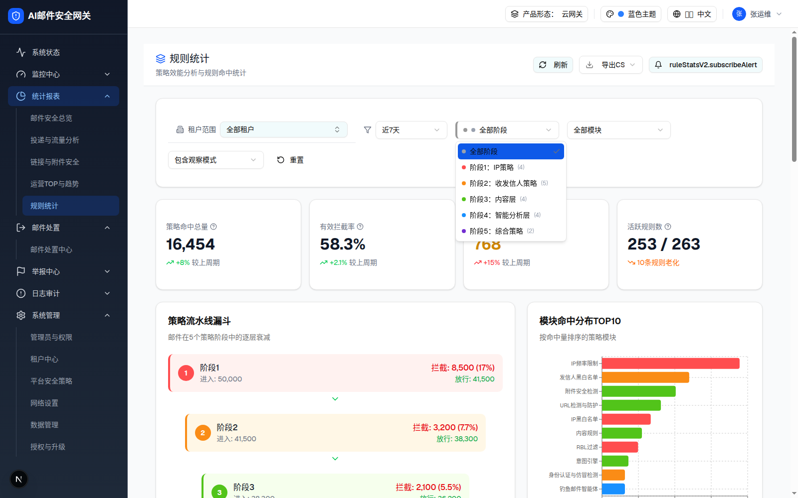
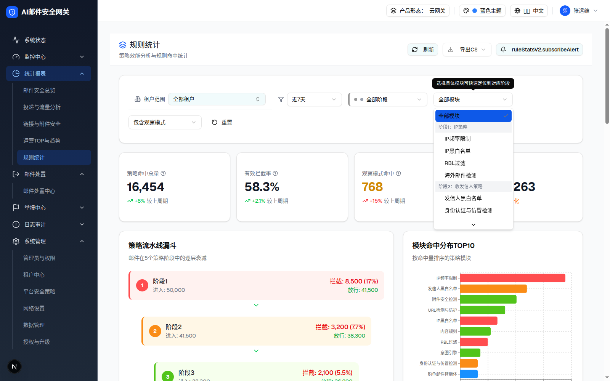
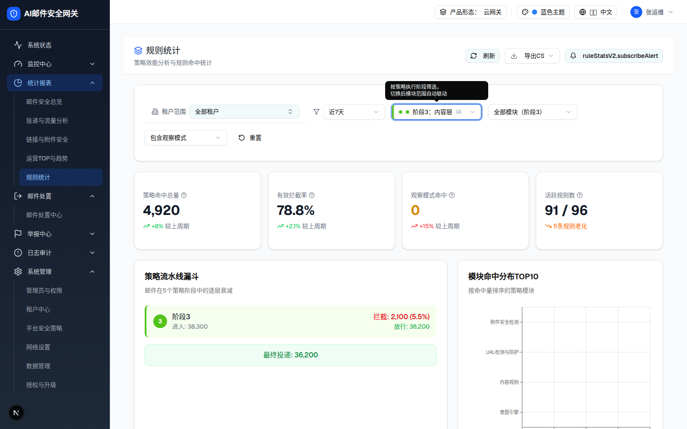
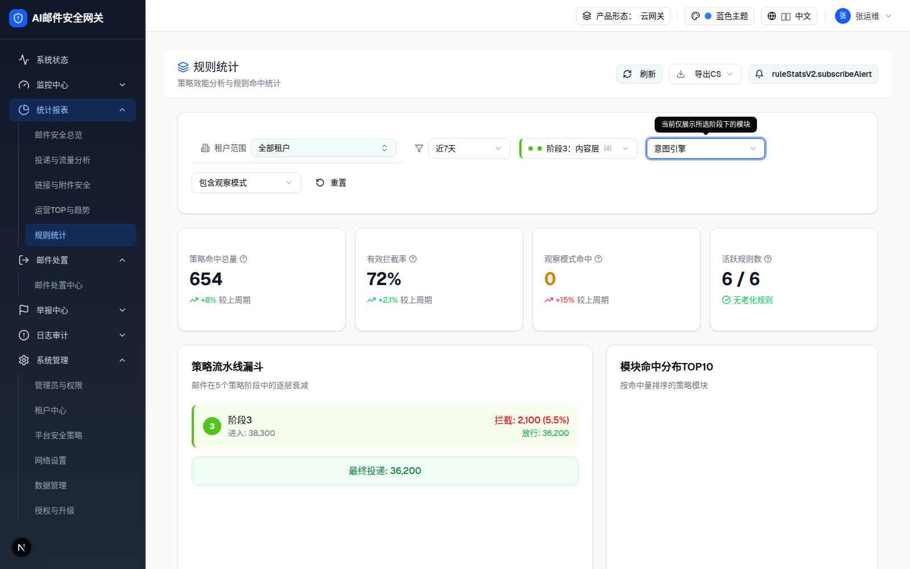
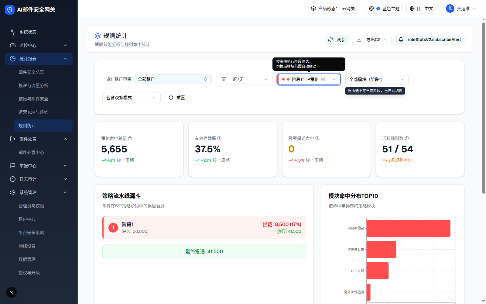
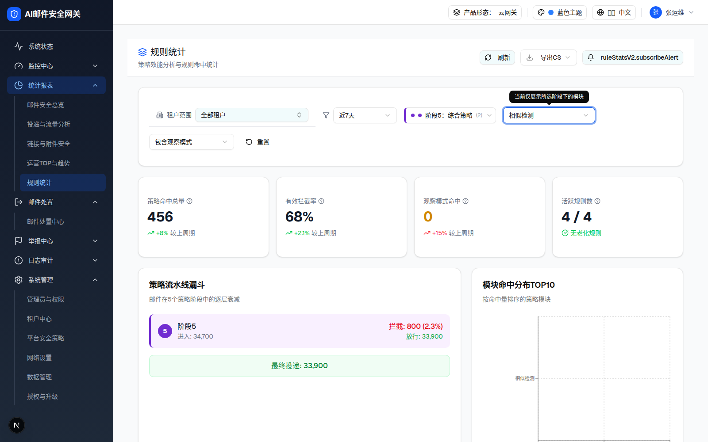
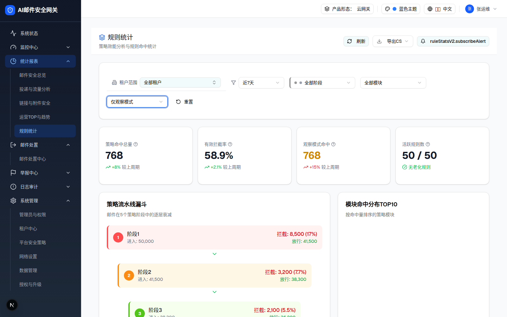
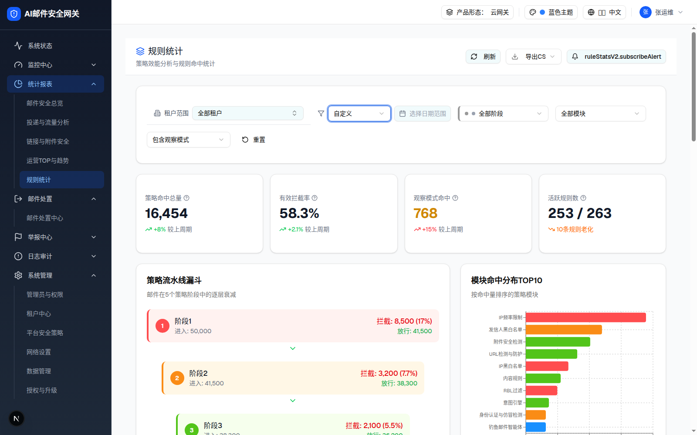
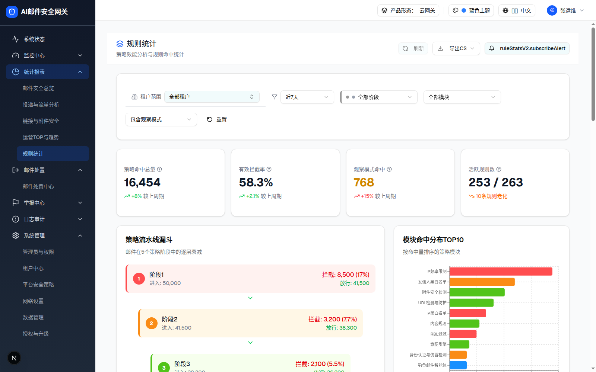

| 所属组件 | 2.2 全局筛选栏 + 2.3 KPI + 2.4 漏斗 + 2.6 卡片墙（联动目标） |
| 主文件 | statistics-rule-stats-v2/index.html |
| 触发路径 | 层级0 筛选栏 → 切换 时间范围 / 阶段 / 模块 / 观察模式 → filteredKPIData / filteredFunnelData / filteredModules 三个 useMemo 全页重算 |
| demo 源 | rule-stats-v2-page.tsx 488-732 行（handleStageChange / handleModuleChange / getTimeMultiplier / 三个 useMemo） |









| # | 规则 | 源码位置 |
|---|---|---|
| 1 | 正向级联：切阶段 → 模块下拉只显示该阶段模块 + 尾部「共N个模块」；若当前所选模块不属于新阶段 → moduleFilter 重置 all + 2s 气泡；明细视图若其模块不属于新阶段 → 关闭 | handleStageChange (489-506) |
| 2 | 反向级联：全部阶段模式下选具体模块 → stageFilter 自动切到 getModuleStage(模块) + stageHighlight 300ms（橙 ring + 橙底） | handleModuleChange (509-523) |
| 3 | 漏斗：全部阶段=5行逐级收窄（100-10i%）；单阶段=仅该行、宽 100% | filteredFunnelData (641-665) |
| 4 | 卡片墙：只渲染筛选后仍有模块的阶段组；空组整组消失 | filteredModules + 1354 行 |
| 5 | 分布TOP10：随筛选结果重排序取前 10 | filteredModuleDistribution |
| 状态 | 浏览器实测（DOM 提取） | 本页仿真 | 是否一致 |
|---|---|---|---|
| 默认（近7天/全部） | KPI 16,454 / 58.3% / 768 / 253/263·10条老化 | 同左（同公式同数据） | ✅ |
| 阶段3 | KPI 4,920 / 78.8% / 0 / 91/96·5条老化；漏斗单行 38,300→36,200；触发器「阶段3：内容层(4)」「全部模块（阶段3）」 | 同左 | ✅ |
| 阶段3+意图引擎 | KPI 654 / 72% / 0 / 6/6 | 同左 | ✅ |
| 切阶段1 触发重置 | 气泡「原所选不在当前阶段，已自动切换」+ 模块变「全部模块（阶段1）」 | 同左（2s 自动消失） | ✅ |
| 反向级联（相似检测） | 阶段自动「阶段5：综合策略(2)」；ring 高亮 300ms（源码，截图未捕获） | 同左（复刻 300ms 橙色高亮） | ✅ |
| 仅观察模式 | KPI 768 / 58.9% / 768 / 50/50；墙=发信行为管控(423)+高级过滤规则(345) | 同左 | ✅ |
| 近30天 | （未实测截图）源码乘数 4.2 | 默认态总量 16,454×4.2≈69,107（同公式） | ✅（公式一致） |